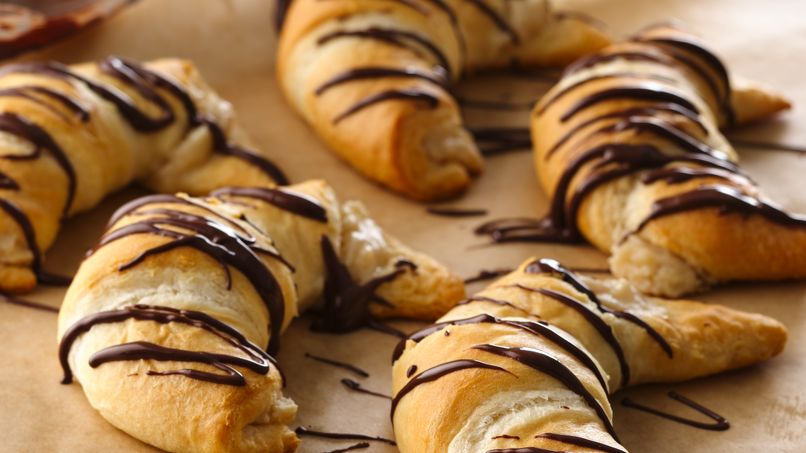

Pan Blanco
Tenemos gran variedad de panes para acompanar con cafe, leche, Chocolate abuelita y para que prepare una deliciosa torta
Conchas variedad de sabores
Prueba nuestras deliciosas conchas con una gran variedad en sabores, hay de vianilla, chocolate y fresa
Cochito
Nuestro cochito te encantara, tiene un toque de canela que lo hara aun mas sabroso que el de la competencia.
Pan de muerto
Por el mes de octubre y noviembre se estara vendiendo pan de muerto muy delicioso.

Donas
Nuestras clasicas donas azucaradas que tomo mundo ama y tambien gran variedad de donas glaseadas

Cuernos
Los mejores cuernitos del condado o si o si mas grandes de los que te puso tu ex.

Pan Integral
Contamos con barras de pan integral al igual que diferentes tipos de panes elavorados con arina integral por si eres fit :)